Rider Safety Basics
Learn the safety habits every horseperson needs first — reading the horse, blind spots, certified helmets and proper boots, and safe leading and tying.
From beginner foundations to advanced topics, join us as we create courses to help horse enthusiasts continue learning, exploring, and growing.
Learn the safety habits every horseperson needs first — reading the horse, blind spots, certified helmets and proper boots, and safe leading and tying.
Understand passing rules, direction calls, right of way, and respectful behavior in a shared riding space.
Learn to move, approach, and behave safely around horses in barn environments, aisles, and stalls.
A guide to respectful habits around shared barn spaces, equipment, other people's horses, and fellow riders.
Learn how horses think and communicate as prey animals — reading body language, understanding instincts, and approaching horses safely.
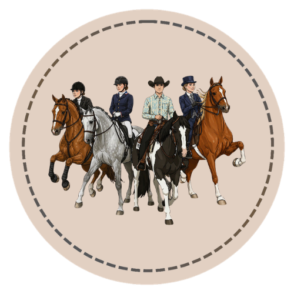
Compare common Western and English riding styles, why they developed, and what each discipline is designed to do.
Learn the walk, trot, canter, and gallop — the beats, footfall patterns, and speed of each natural gait.
Understand how riders communicate through the seat, legs, hands, and voice, plus common artificial aids.
Learn circles, serpentines, diagonals, and other arena figures that build balanced, purposeful riding.
Learn how to use a measuring stick or tape to determine a horse's height in hands, and why accurate measurement matters.
Discover the essential grooming tools, proper technique, and why routine grooming supports horse health and bonding.
Understand forage basics, feeding schedules, water needs, and why consistency is essential in horse nutrition.
Learn to recognize common injuries, stock a basic first aid kit, and know when a situation requires veterinary attention.

Get introduced to the most common horse and pony breeds, their origins, characteristics, and typical uses.

Learn stars, strips, snips, blazes, bald faces, and common face marking combinations.

Identify common horse coat colors and patterns including chestnut, bay, black, gray, palomino, buckskin, roans, pinto, and Appaloosa.
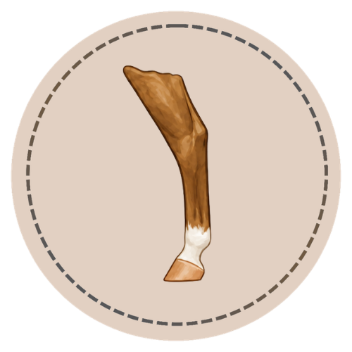
Learn coronets, pasterns, socks, stockings, high stockings, ermine marks, and how to describe white leg markings.

Learn the horse body map: head, neck and shoulders, body, front legs, and hind legs.
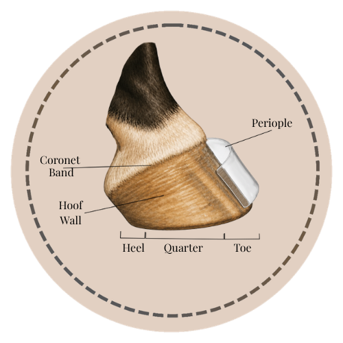
Learn the hoof map: outside structures, including the periople, and the underneath landmarks.
Understand how a horse's teeth grow, change with age, and what dental health looks like at different life stages.
Explore the bones and joints that form the horse's frame and learn how they support movement and load-bearing.
Discover what tack is, why it’s used, and the basic components of a saddle and bridle before exploring discipline-specific gear.
Learn how to properly clean, condition, and store leather tack to extend its life and keep it safe to use.
Get introduced to snaffle and curb bit families, basic bridle types, and bitless options at a beginner level.
Learn common halter types, lead ropes, and the everyday handling equipment used around the barn.
Recognize turnout blankets, sheets, coolers, leg boots, and other protective gear and when each is used.
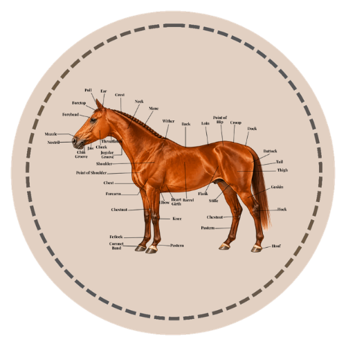
Go beyond the foundation course with deeper anatomy study organized by region, structure, function, and real-world care context.
Explore the coffin bone, navicular bone, laminae, and digital cushion protected inside the hoof capsule.
Follow the path of food through the foregut and hindgut and learn why equine digestion is so sensitive.
Study the tendons, ligaments, and joints of the lower leg and how they support soundness and movement.
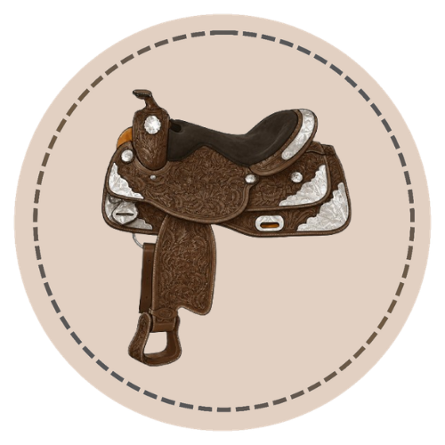
Learn the names and function of western saddles, bridles, bits, cinches, and common western discipline equipment.
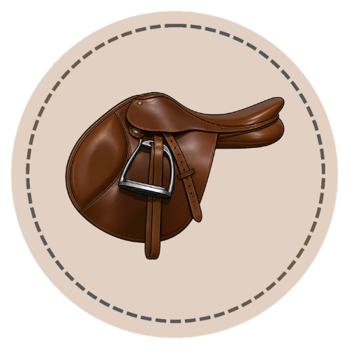
Learn the names and function of English saddles, bridles, bits, stirrups, girths, and common English discipline equipment.
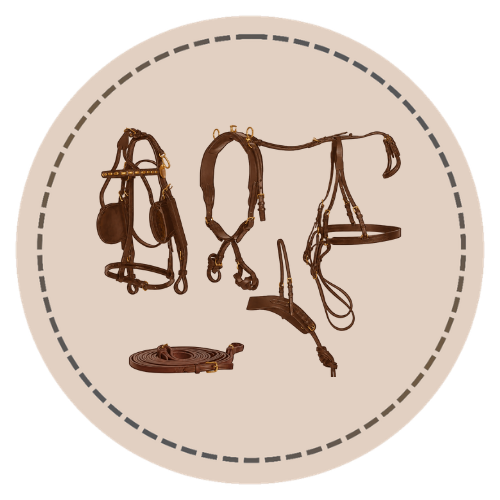
Learn the names and function of driving harnesses, bridles, lines, breeching, traces, and common driving styles.
Compare western, English, and specialty saddle types, how they differ, and what each is designed to do.
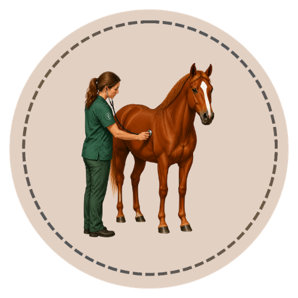
Learn to check and interpret temperature, pulse, respiration, and other key vital signs in horses.
Recognize the signs of colic, learn what to check, and understand how to respond while waiting for the veterinarian.
Learn to assess common wounds, apply basic bandages, and recognize injuries that require veterinary care.
Understand core vaccinations, deworming strategy, and parasite control as part of a year-round health plan.
Build a complete preventive health program — vaccines, deworming, dental care, common conditions, and when to call the vet.
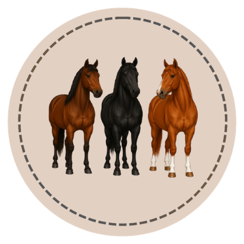
Learn chestnut, black, and bay — the three base coat colors every horse color is built from.
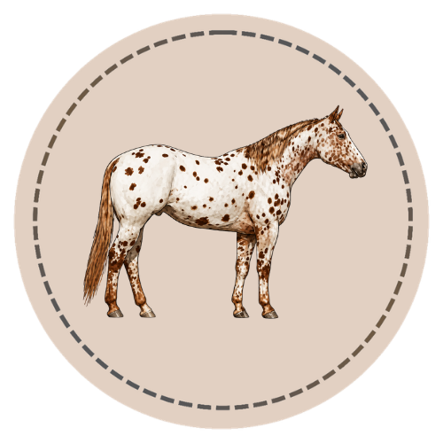
Study blanket, leopard, snowflake, varnish roan, and other Appaloosa pattern expressions.
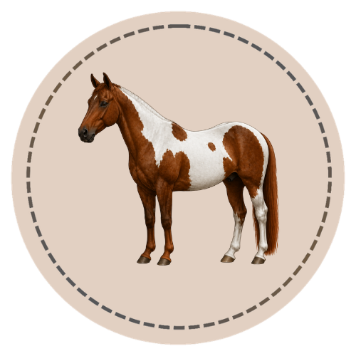
Compare tobiano, overo, tovero, splash white, sabino, frame overo, and named pinto looks.
Understand dominant vs. recessive genes, alleles, and how two genes produce every coat color.
Learn how cream, dun, silver, and champagne genes alter base coat colors.
Explore roan, tobiano, overo, sabino, and other white-pattern genes and how they express.
Apply what you've learned: predict color outcomes from parent crosses and real-world examples.
Study equine ethology, herd social structure, advanced body language, stress indicators, and the principles behind how horses learn — FFA/4-H aligned.
Understand the equine digestive system, forage types, feed programs, body condition scoring, and how to build a balanced feeding plan for any workload or life stage.
Learn the farriery cycle, barefoot vs. shod management, common hoof conditions like thrush and abscesses, and the horseperson’s daily role in hoof health.
Go deeper on gait mechanics, leads, transitions, and movement quality — learn what judges and trainers look for and how soundness connects to how a horse travels.
Understand OLWS, WFFS, HYPP, and other gene interactions with serious breeding implications.
Learn to interpret panel test reports, understand notation, and apply results to breeding decisions.
Explore how environment influences gene expression and what that means for health and performance.
Apply genetic knowledge to thoughtful, goal-oriented breeding decisions and bloodline evaluation.
Understand how muscle, bone, tendon, and ligament work together during movement and absorb force.
Learn how the heart, lungs, and circulation respond to exercise and what fitness adaptation looks like.
Explore how nerves, hormones, and stress pathways shape behavior, metabolism, and disease risk.
Understand the mare's cycle, stallion reproductive function, gestation, and foaling essentials.
Learn how to observe gait abnormalities, grade lameness, and communicate findings clearly to a vet.
Explore laminitis, navicular syndrome, thrush, white line disease, and hoof abscess in depth.
Understand tendon and ligament injuries, healing timelines, and the role of rehabilitation in recovery.
Learn how joint disease develops, the role of synovial fluid, and current management options.

Practice identifying common horse coat colors through hands-on matching, sorting, and recognition activities.

Three activities in one place — Face Marking Match, Pin the Marking on the Horse, and the Marking Memory Game.

Practice leg marking identification through the challenge, crossword, and memory activities.

Practice labeling the parts of a western saddle and western bridle with randomized callout activities.

Practice labeling the parts of an English saddle and English bridle with randomized callout activities.
Practice base coat color identification through comparisons, identification scenarios, and a word search.

Practice foundational horse body parts through the anatomy challenge, region sort, and memory activities.
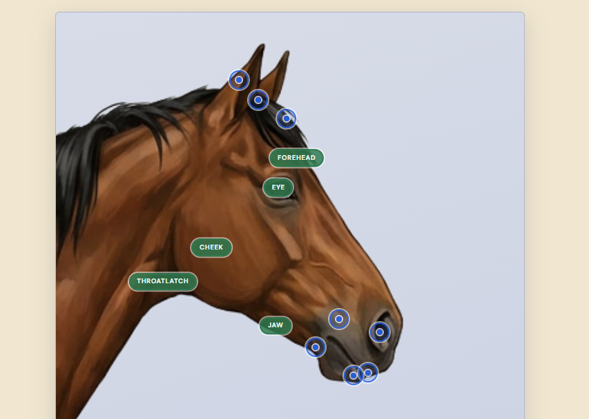
Practice external anatomy labels, body-region sorting, quick recall, and term matching in a standalone activity set.
A rapid-fire identification quiz — look at the horse, choose the correct color or marking, and build your recognition speed.
Two similar horses — can you identify what’s different? Sharpen your eye for subtle coat and marking variations.
Build equine vocabulary through fill-in-the-blank and definition matching — covers key terms from across the curriculum.

Free printable reference sheets, labeling worksheets, and drawing practice pages for face markings — in PDF and PNG.

Free printable base coat color reference and matching worksheets for chestnut, black, and bay.

Free printable coat color worksheets for coloring practice and review — in PDF and PNG. Reference sheet coming later.

Free printable leg marking worksheets and reference downloads for identification practice — in PDF and PNG.

Free printable parts of the horse reference sheets and labeling worksheets for anatomy practice — in PDF and PNG.
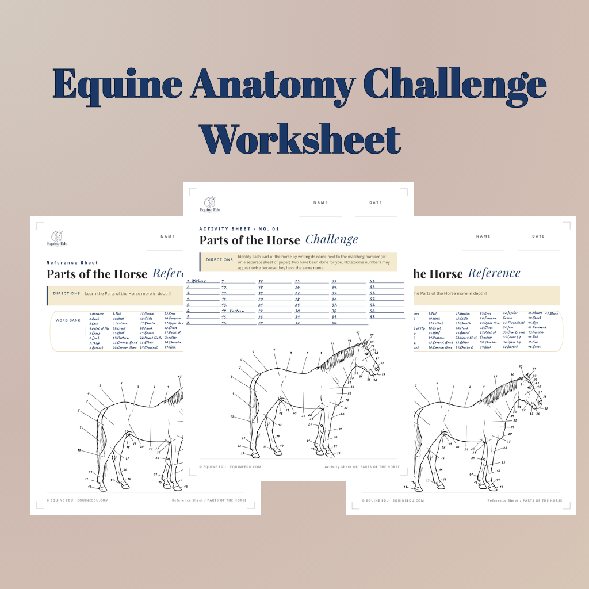
Free printable external equine anatomy reference and challenge worksheets for intermediate anatomy practice.
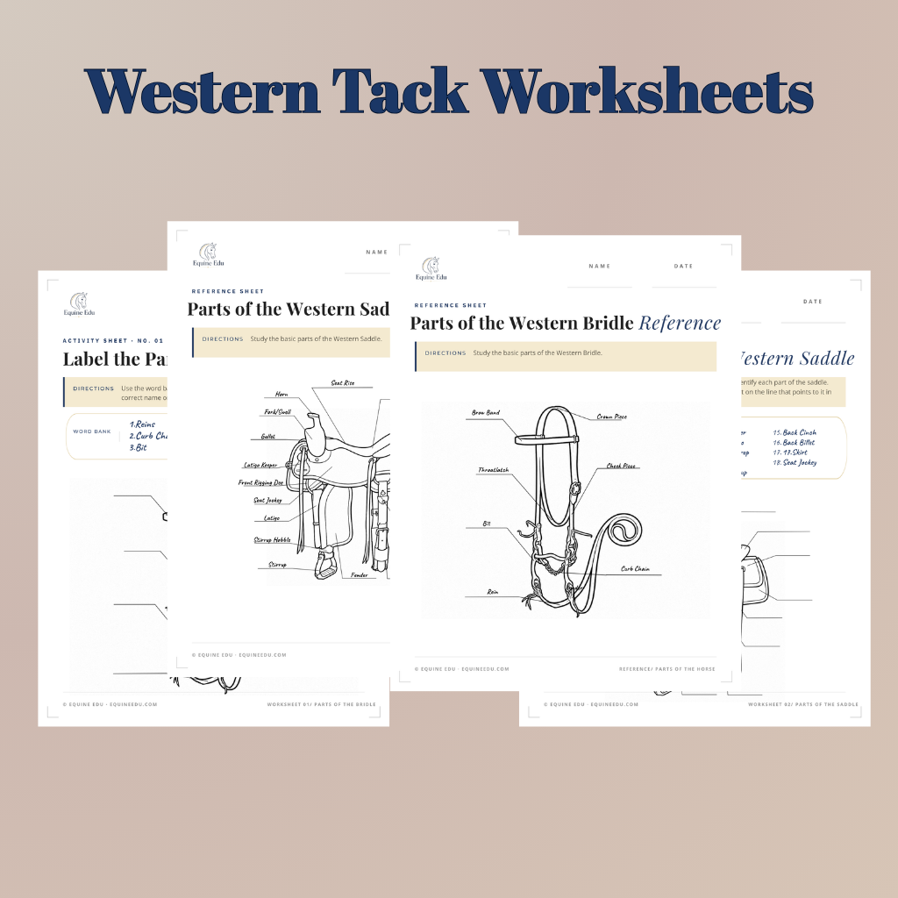
Free printable western saddle and bridle reference sheets and labeling worksheets — in PDF and PNG.
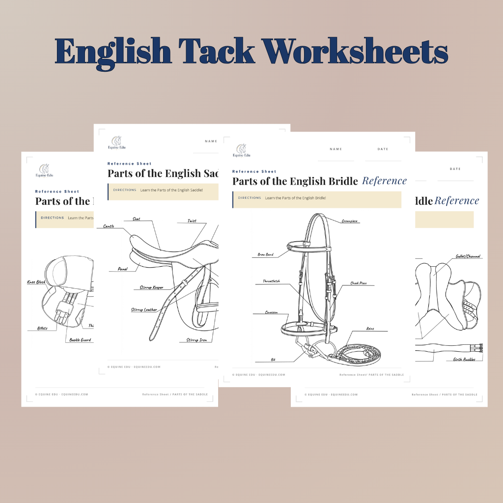
Free printable English saddle and bridle reference sheets and labeling worksheets — in PDF and PNG.

Free printable riding discipline reference sheets and worksheets for matching Western and English riding styles.
A downloadable weekly planner designed for riding instructors — block out lessons, student notes, and goals in one place.
A curated list of ground activities, games, and educational sessions to fill a full day of equine camp programming.
No-pressure ideas for engaging beginners on the ground — grooming stations, obstacle courses, color matching, and more.
A printable template for tracking individual student goals, skills achieved, and notes across a session or season.
Explore 28 horse and pony breeds with interactive profiles, size comparisons, fun facts, and a breed discovery tracker.
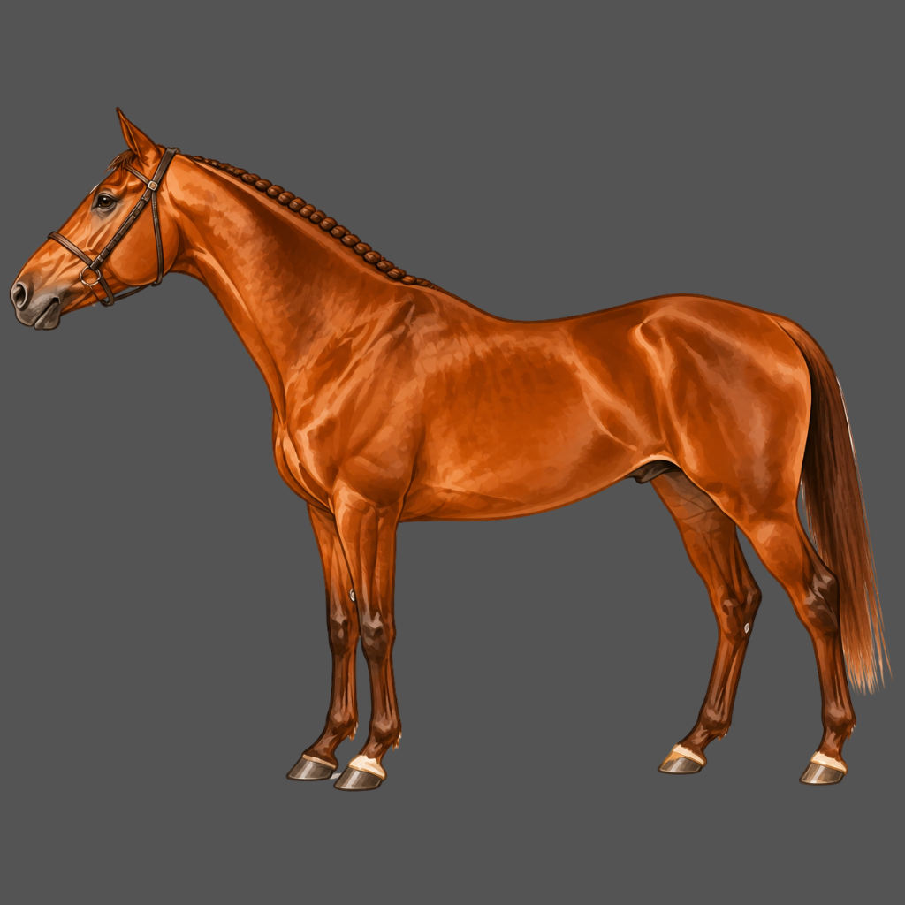
Look up barn vocabulary, anatomy words, movement terms, tack, care language, safety notes, and vital-sign basics in one searchable guide.
Study authentic horse photos — identify coat colors, face markings, and leg markings on real horses from a curated photo library.
Visual comparisons of ideal and common conformation types — explore balance, proportion, and structural traits across breeds.
A practical guide to the documents every horse owner encounters — what each form means and why they matter.
Common misconceptions and mistakes — a straight-talking guide to the things that catch beginners off guard.
A first-timer’s guide to a horse show — classes, attire, judging basics, and what happens in the warm-up ring.
The non-negotiables for staying safe around horses — handling habits, barn rules, and reading equine body language.
A free, kid-friendly quiz for practicing everyday coat color recognition in a fast, simple format.
Quick visual questions for face and leg markings, built for learners who like short practice rounds.
A light review quiz covering horse care, safety, tack vocabulary, and beginner barn knowledge.
Short, evergreen questions that help students review common tack pieces and what they are used for.
A simple quiz for matching common Western and English disciplines to the jobs and goals behind them.
A rotating mini quiz designed as quick free practice for young learners and new horse people.
No matching lessons found. Try another search term.
Equine Edu is built to grow with you - from your first horse terms to advanced genetics, physiology, and lameness science. Every course is structured, visual, and built for real learning.
Back to All Courses